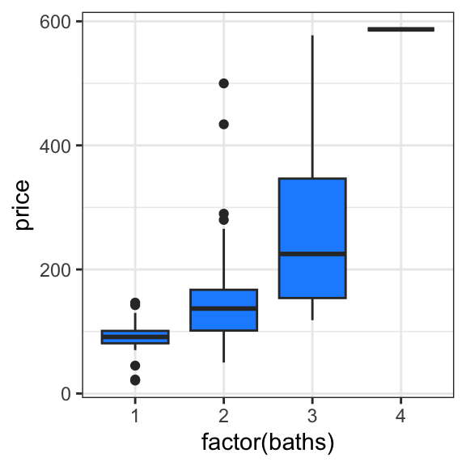
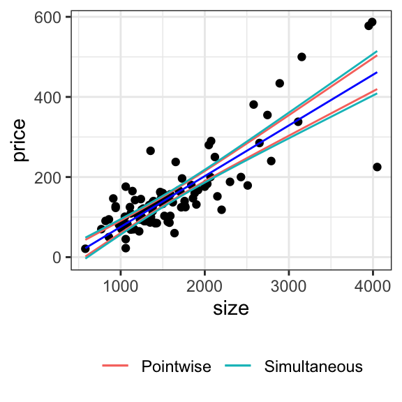

# create a pairs plot of continuous variableshouses_data |>select(price, size, taxes) |>ggpairs()
# see how price relates to bedshouses_data |>ggplot(aes(x =factor(beds), y = price)) +geom_boxplot(fill ="dodgerblue")
# see how price relates to bathshouses_data |>ggplot(aes(x =factor(baths), y = price)) +geom_boxplot(fill ="dodgerblue")

# see how price relates to newhouses_data |>ggplot(aes(x =factor(new), y = price)) +geom_boxplot(fill ="dodgerblue")
12.2 Hypothesis testing
Let’s run a linear regression and interpret the summary. But first, we must decide whether to model beds/baths as categorical or continuous? We should probably model these as categorical, given the potentially nonlinear trend observed in the box plots.
lm_fit <-lm(price ~factor(beds) +factor(baths) + new + size,data = houses_data)summary(lm_fit)
Call:
lm(formula = price ~ factor(beds) + factor(baths) + new + size,
data = houses_data)
Residuals:
Min 1Q Median 3Q Max
-179.306 -32.037 -2.899 19.115 152.718
Coefficients:
Estimate Std. Error t value Pr(>|t|)
(Intercept) -19.26307 18.01344 -1.069 0.287730
factor(beds)3 -16.46430 15.04669 -1.094 0.276749
factor(beds)4 -12.48561 21.12357 -0.591 0.555936
factor(beds)5 -101.14581 55.83607 -1.811 0.073366 .
factor(baths)2 2.39872 15.44014 0.155 0.876885
factor(baths)3 -0.70410 26.45512 -0.027 0.978825
factor(baths)4 273.20079 83.65764 3.266 0.001540 **
new 66.94940 18.50445 3.618 0.000487 ***
size 0.10882 0.01234 8.822 7.46e-14 ***
---
Signif. codes: 0 '***' 0.001 '**' 0.01 '*' 0.05 '.' 0.1 ' ' 1
Residual standard error: 51.17 on 91 degrees of freedom
Multiple R-squared: 0.7653, Adjusted R-squared: 0.7446
F-statistic: 37.08 on 8 and 91 DF, p-value: < 2.2e-16
We can read off the test statistics and \(p\)-values for each variable from the regression summary, as well as for the \(F\)-test against the constant model from the bottom of the summary.
Let’s use an \(F\)-test to assess whether the categorical baths variable is important.
lm_fit_partial <-lm(price ~factor(beds) + new + size,data = houses_data)anova(lm_fit_partial, lm_fit)
Analysis of Variance Table
Model 1: price ~ factor(beds) + new + size
Model 2: price ~ factor(beds) + factor(baths) + new + size
Res.Df RSS Df Sum of Sq F Pr(>F)
1 94 273722
2 91 238289 3 35433 4.5104 0.005374 **
---
Signif. codes: 0 '***' 0.001 '**' 0.01 '*' 0.05 '.' 0.1 ' ' 1
Analysis of Variance Table
Model 1: price ~ factor(beds) + new + size
Model 2: price ~ factor(beds) + baths + new + size
Res.Df RSS Df Sum of Sq F Pr(>F)
1 94 273722
2 93 273628 1 94.33 0.0321 0.8583
If we want to test for the equality of means across groups of a categorical predictor, without adjusting for other variables, we can use the ANOVA \(F\)-test. There are several equivalent ways of doing so:
# just use the summary functionlm_fit_baths <-lm(price ~factor(baths), data = houses_data)summary(lm_fit_baths)
Call:
lm(formula = price ~ factor(baths), data = houses_data)
Residuals:
Min 1Q Median 3Q Max
-146.44 -45.88 -7.89 22.22 352.01
Coefficients:
Estimate Std. Error t value Pr(>|t|)
(Intercept) 90.21 19.51 4.624 1.17e-05 ***
factor(baths)2 57.68 21.72 2.656 0.00927 **
factor(baths)3 174.52 31.13 5.607 1.97e-07 ***
factor(baths)4 496.79 82.77 6.002 3.45e-08 ***
---
Signif. codes: 0 '***' 0.001 '**' 0.01 '*' 0.05 '.' 0.1 ' ' 1
Residual standard error: 80.44 on 96 degrees of freedom
Multiple R-squared: 0.3881, Adjusted R-squared: 0.369
F-statistic: 20.3 on 3 and 96 DF, p-value: 2.865e-10
# use the anova function as beforelm_fit_const <-lm(price ~1, data = houses_data)anova(lm_fit_const, lm_fit_baths)
Analysis of Variance Table
Model 1: price ~ 1
Model 2: price ~ factor(baths)
Res.Df RSS Df Sum of Sq F Pr(>F)
1 99 1015150
2 96 621130 3 394020 20.299 2.865e-10 ***
---
Signif. codes: 0 '***' 0.001 '**' 0.01 '*' 0.05 '.' 0.1 ' ' 1
# use the aov functionaov_fit <-aov(price ~factor(baths), data = houses_data)summary(aov_fit)
Df Sum Sq Mean Sq F value Pr(>F)
factor(baths) 3 394020 131340 20.3 2.86e-10 ***
Residuals 96 621130 6470
---
Signif. codes: 0 '***' 0.001 '**' 0.01 '*' 0.05 '.' 0.1 ' ' 1
We can also use an \(F\)-test to test for the presence of an interaction with a multi-class categorical predictor.
lm_fit_interaction <-lm(price ~ size *factor(beds), data = houses_data)summary(lm_fit_interaction)
To construct simultaneous confidence intervals for the fit or predictions, we again need a slightly more manual approach. We call predict() again, but this time asking it for the standard errors rather than the confidence intervals:
In the case of simple linear regression, we can plot these pointwise and simultaneous confidence intervals as bands:
# to produce confidence intervals for fits in general, use the predict() functionn <-nrow(houses_data)p <-2alpha <-0.05lm_fit <-lm(price ~ size, data = houses_data)predictions <-predict(lm_fit, se.fit =TRUE)t_quantile <-qt(1- alpha /2, df = n - p)f_quantile <-qf(1- alpha, df1 = p, df2 = n - p)houses_data |>mutate(fit = predictions$fit,se = predictions$se.fit,ptwise_width = t_quantile * se,simultaneous_width =sqrt(p * f_quantile) * se ) |>ggplot(aes(x = size)) +geom_point(aes(y = price)) +geom_line(aes(y = fit), color ="blue") +geom_line(aes(y = fit + ptwise_width, color ="Pointwise")) +geom_line(aes(y = fit - ptwise_width, color ="Pointwise")) +geom_line(aes(y = fit + simultaneous_width, color ="Simultaneous")) +geom_line(aes(y = fit - simultaneous_width, color ="Simultaneous")) +theme(legend.title =element_blank(), legend.position ="bottom")

12.4 Predictor competition and collaboration
Let’s look at the power of detecting the association between price and beds. We can imagine that beds and baths are correlated:
houses_data |>ggplot(aes(x = beds, y = baths)) +geom_count()
So let’s see how significant beds is, with and without baths in the model:
lm_fit_only_beds <-lm(price ~factor(beds), data = houses_data)summary(lm_fit_only_beds)
Call:
lm(formula = price ~ factor(beds), data = houses_data)
Residuals:
Min 1Q Median 3Q Max
-234.35 -50.63 -15.69 24.56 365.86
Coefficients:
Estimate Std. Error t value Pr(>|t|)
(Intercept) 105.94 21.48 4.931 3.43e-06 ***
factor(beds)3 44.69 24.47 1.827 0.070849 .
factor(beds)4 105.70 32.35 3.268 0.001504 **
factor(beds)5 246.71 69.62 3.544 0.000611 ***
---
Signif. codes: 0 '***' 0.001 '**' 0.01 '*' 0.05 '.' 0.1 ' ' 1
Residual standard error: 93.65 on 96 degrees of freedom
Multiple R-squared: 0.1706, Adjusted R-squared: 0.1447
F-statistic: 6.583 on 3 and 96 DF, p-value: 0.0004294
lm_fit_only_baths <-lm(price ~factor(baths), data = houses_data)lm_fit_beds_baths <-lm(price ~factor(beds) +factor(baths), data = houses_data)anova(lm_fit_only_baths, lm_fit_beds_baths)
Analysis of Variance Table
Model 1: price ~ factor(baths)
Model 2: price ~ factor(beds) + factor(baths)
Res.Df RSS Df Sum of Sq F Pr(>F)
1 96 621130
2 93 572436 3 48693 2.637 0.05424 .
---
Signif. codes: 0 '***' 0.001 '**' 0.01 '*' 0.05 '.' 0.1 ' ' 1
We see that the significance of beds dropped by two orders of magnitude. This is an example of predictor competition.
On the other hand, note that the variable new is not very correlated with beds:
lm_fit <-lm(new ~ beds, data = houses_data)summary(lm_fit)
Call:
lm(formula = new ~ beds, data = houses_data)
Residuals:
Min 1Q Median 3Q Max
-0.15762 -0.11000 -0.11000 -0.08619 0.91381
Coefficients:
Estimate Std. Error t value Pr(>|t|)
(Intercept) 0.03857 0.14950 0.258 0.797
beds 0.02381 0.04871 0.489 0.626
Residual standard error: 0.3157 on 98 degrees of freedom
Multiple R-squared: 0.002432, Adjusted R-squared: -0.007747
F-statistic: 0.2389 on 1 and 98 DF, p-value: 0.6261
but we know it has a substantial impact on price. Let’s look at the significance of the test that beds is not important when we add new to the model.
lm_fit_only_new <-lm(price ~ new, data = houses_data)lm_fit_beds_new <-lm(price ~ new +factor(beds), data = houses_data)anova(lm_fit_only_new, lm_fit_beds_new)
Analysis of Variance Table
Model 1: price ~ new
Model 2: price ~ new + factor(beds)
Res.Df RSS Df Sum of Sq F Pr(>F)
1 98 787781
2 95 619845 3 167936 8.5795 4.251e-05 ***
---
Signif. codes: 0 '***' 0.001 '**' 0.01 '*' 0.05 '.' 0.1 ' ' 1
Adding new to the model made the \(p\)-value more significant by a factor of 10. This is an example of predictor collaboration.